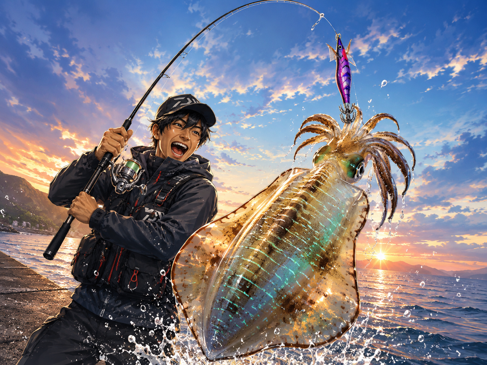

エギング初心者におすすめの道具5選
エギング(アオリイカのルアー釣り)は、ロッド・リール・ライン・エギの4つが揃えばすぐに始められます。
ここでは、初心者が最初の一式として選んで間違いない、扱いやすくコスパの良い5点を紹介します。

道具選びのポイント
エギングのタックルは、次の4つを基準に選ぶと失敗しません。最初は“中庸”を選んでおくと、秋の新子から春の親イカまで長く使えます。
- ロッド
8ft台で取り回しがよく、しゃくりやすいエントリーモデル。
- リール
C3000前後・ハイギア。糸フケ回収が速くトラブルが少ないもの。
- ライン
PE0.6〜0.8号。感度と飛距離が出て、色分けで深さが分かると便利。
- エギ
まずは万能の3.0号。実績のある定番カラーから揃える。
ロッド
最初の1本は、軽くて取り回しがよく、しゃくりやすいエントリーロッドが正解。長さは8ft台が扱いやすく、エギ3.0号を基準に選べば秋〜春まで対応できます。
メジャークラフト ファーストキャスト エギング FCS-832E
- メーカー
- メジャークラフト
- 全長
- 8.3ft(2ピース)
- 適合エギ
- 2.0〜3.5号
- 適合ライン
- PE 0.4〜1.2号
- アクション
- レギュラーファースト
- 参考自重
- 約98g(実測値)
- 価格帯
- 実売1万円以下
8.3ftと取り回しの良い長さで、しゃくりやすさと扱いやすさを両立したエントリーモデル。中弾性カーボンでよく曲がり、キャストもファイトも初心者にやさしい設計です。エギ3.0号がドンピシャで、実売1万円以下のコスパも大きな魅力。まさに“最初の1本”に最適です。

リール
エギングはしゃくって糸フケを出す釣りなので、糸フケの回収が速いハイギア、そしてライントラブルの少なさが重要。番手はC3000前後が扱いやすいです。
シマノ 26ナスキー C3000HG
- メーカー
- シマノ
- 番手
- C3000HG
- 自重
- 235g
- ギア
- ハイギア(HG)
- 発売
- 2026年1月
- 価格帯
- 実売1万円前後
2026年に5年ぶりのフルモデルチェンジを受けたコスパ機。インフィニティドライブ(パワフルな巻き上げ)、アンチツイストフィン(糸絡み抑制)、コアプロテクト(防水)など上位機種譲りの装備で、剛性・巻き上げ・トラブルレス性能が高いのが強みです。C3000HGはハイギアで糸フケの回収が速く、しゃくり主体のエギングと好相性。自重235gとやや重めですが、その分の安心感とパワーがあります。

ライン
エギングのメインラインはPEが基本。感度と飛距離を出しつつ、飛距離やエギを沈めた深さが分かるマルチカラーだと、初心者でも状況を把握しやすくなります。
シーガー PE X8 マルチ 0.8号 200m
- メーカー
- クレハ(シーガー)
- 号数
- 0.8号
- 長さ
- 200m
- 構造
- 8本編み(X8)
- カラー
- マルチ(色分け)
強度と扱いやすさのバランスが良い8本編みPE。10mごとに色が変わるマルチカラーなので、飛距離やエギを沈めるカウント(深さ)が一目で分かり、エギングと相性抜群です。0.8号200mはC3000のスプールにちょうど良く、秋の新子から春の親イカまで幅広く対応します。

エギ
エギは実績のある定番から。標準沈下の“ベーシック”と、ゆっくり沈む“シャロー”を1本ずつ持つと、深さ・活性・時間帯で使い分けられます。サイズは万能の3.0号を基準に。
ヤマシタ エギ王K ベーシック 3.0号 ムラムラチェリー
- メーカー
- ヤマシタ
- サイズ
- 3.0号
- タイプ
- ベーシック(標準沈下)
- 沈下速度
- 約3.5秒/m
- カラー
- ムラムラチェリー
ヤマシタの大定番「エギ王K」の標準沈下モデル。ハイドロフィンでダートの安定感が高く、スレたイカにも強いのが“K”シリーズの持ち味です。ムラムラチェリーはケイムラ(紫外線発光)ボディのピンク系で、朝夕マヅメ・ナイト・濁りなどローライト全般に強い、“迷ったらこれ”の鉄板カラー。3.0号は最も出番の多い基準サイズです。

ヤマシタ エギ王K シャロー 3.0号 軍艦グリーン
- メーカー
- ヤマシタ
- サイズ
- 3.0号
- タイプ
- シャロー(ゆっくり沈下)
- 沈下速度
- 約6秒/m
- カラー
- 軍艦グリーン
同じエギ王Kのシャロータイプは沈下がゆっくりで、浅場や根の上、低活性でじっくり見せたい場面で活躍します。軍艦グリーンはナチュラルなグリーン系で、日中やクリア〜ややステインの水色で使いやすい定番カラー。ベーシックのムラムラチェリーと組み合わせれば、「深場×浅場」「暗い時間×明るい時間」をひと通りカバーできます。

この5点でエギングが始められる
ロッド＋リール＋ライン＋エギ2個。この5点があれば、あとはリーダー(フロロカーボン2〜2.5号)をPEに結ぶだけで、すぐに釣り場に立てます。リーダーだけは今回のリストに含まれていないので、忘れずに用意しましょう。慣れてきたら、エギの色とサイズ(2.5号・3.5号)を少しずつ足していくのがおすすめです。
まとめ
エギングは道具がシンプルで、最初の一式さえ揃えれば手軽に始められる釣りです。
今回の5点は、扱いやすさ・コスパ・実績のバランスが良く、最初の1セットとして自信を持っておすすめできる組み合わせ。まずはこの一式で、アオリイカの引きを体感してみてください。